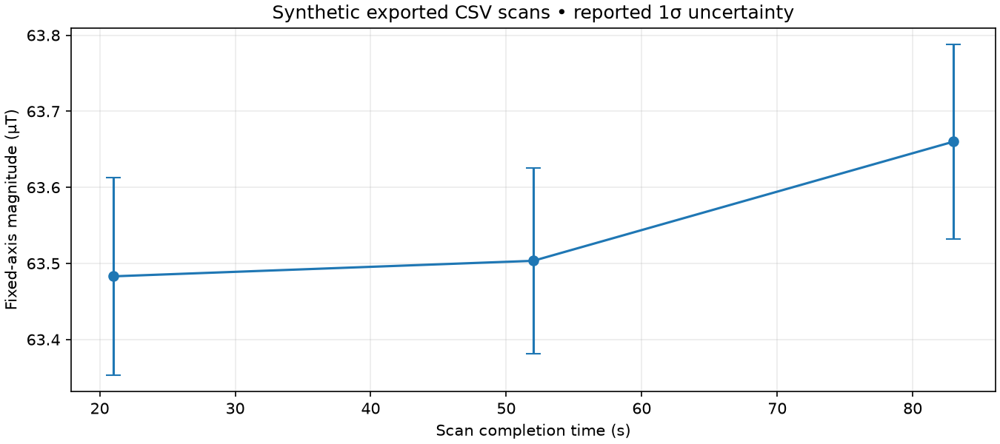

by Christina Holt
Three raw-count CSV scans and a fictional magnetic grid passed the import contract. The map and scans share the same synthetic environment; this does not test independent-survey errors. Toy gravity aiding and trusted stationary corrections are retained from v0.3.
3 / 3 scans accepted · 3 magnetic updates used · 175 state snapshots · repeat final state and covariance identical.

| Scan | Magnitude (µT) | Reported std (µT) | Fit flags |
|---|---|---|---|
| 0 | 63.4830 | 0.1296 | Accepted |
| 1 | 63.5034 | 0.1222 | Accepted |
| 2 | 63.6600 | 0.1278 | Accepted |
Explicit unit conversion, acquisition timing, fixed-axis compatibility, calibration terms, rectangular-map validation and SHA-256 provenance. Exported magnetic measurements feed the existing local six-state filter once each.
Import audit · Fit estimates · Update decisions · State snapshots · Repeat check · Input manifest
Supply equal-dwell raw photon counts, independently surveyed fixed-axis magnitude maps and explicit calibration/timing records. Origins, stationarity and map independence are user declarations. The adapter does not verify them. A fit acceptance does not validate hardware accuracy, systematic errors, attitude or navigation integrity.